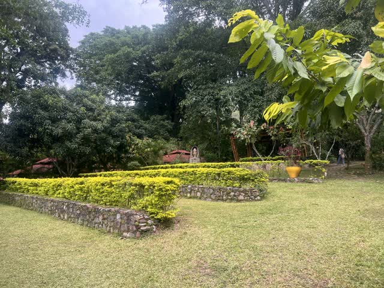
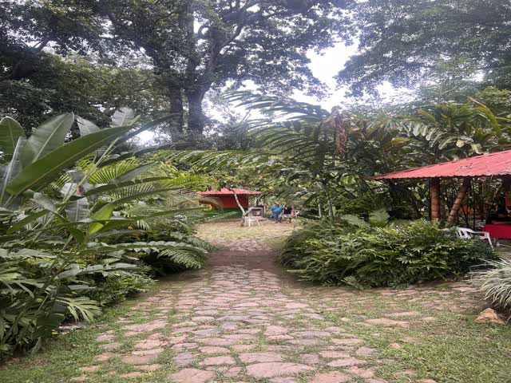

Villa Adelaida · Manaure Cesar

01
CRÓNICA DE VIAJE · PERIJÁ

Hospedaje, Gastronomía y Balneario Natural
Villa Adelaida
El Oasis del Río: donde el agua fresca y el fogón campesino dan la bienvenida.
“El punto cero del circuito: el murmullo del Río Manaure entre lajas de piedra y el aroma a cocina tradicional a la leña.”
Punto de partida y corazón de la red. Disfruta de refrescantes pozas de agua pura del Río Manaure, sombra natural y la calidez del fogón campesino con asados y sancochos tradicionales cocidos lentamente a la leña.
Altitud
750 m.s.n.m.
Acceso
Km 0 · Punto de partida del circuito
Ubicación
Vía Arjona, Sector La Rosita, Manaure
Público ideal
Familias, parejas y grupos de descanso campestre
Recomendación práctica del viajero:
Traje de baño, toalla, calzado acuático para piedras de río y protector solar biodegradable.
Especialidades y Experiencias:
Cocina criolla a la leñaPozas y balneario naturalPasadías campestresMirador paisajísticoEventos y música local
RESERVAR POR WHATSAPP
Reserva directa con el anfitrión · Sin intermediarios